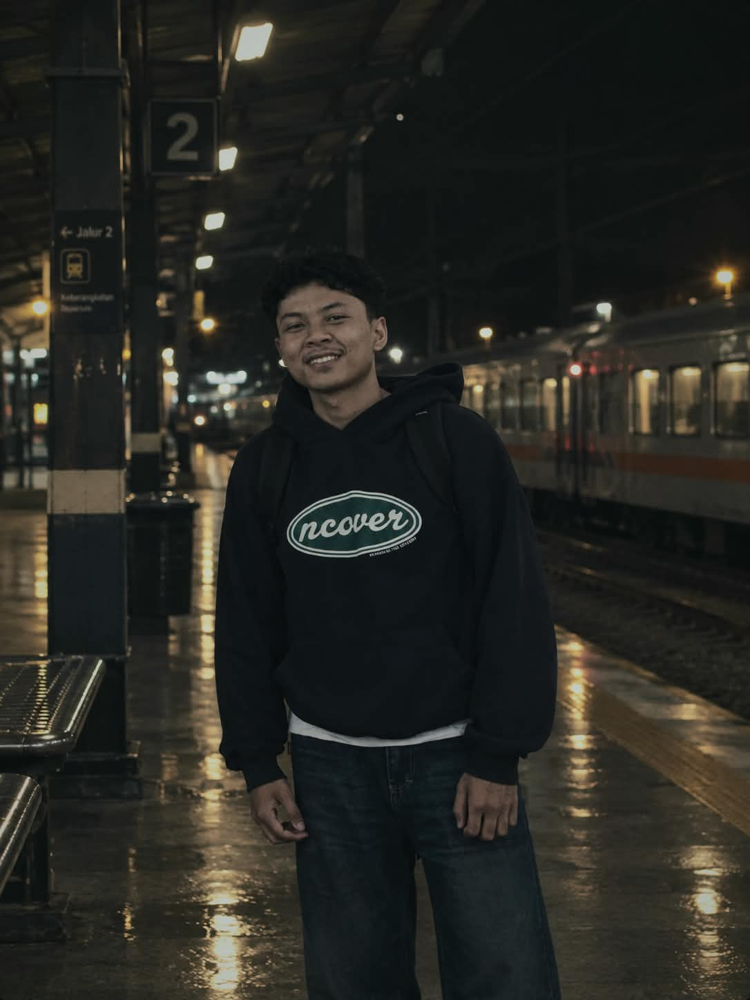

01
PENGALAMAN KERJA
Staff Oprasional
PT.Bestprofit Futures Bandung
- Administrasi operasional perusahaan.
- Pengelolaan data klien .
- Dokumentasi kegiatan operasional .
KomunikasiPengolahan dataAdaptasi
PORTOFOLIO PROFESIONAL
Terbuka untuk kesempatan kerja
Saya memiliki pengalaman dalam rancang bangun sistem debagai Backend Developer, melayani pelanggan, menangani transaksi penjualan, melakukan pembukuan harian, serta pengalaman dalam bidang oprasional prusahaan.

01 / TENTANG SAYA
Saya merupakan lulusan S1 Informatika yang tertarik mengembangkan pengalaman di bidang backend developer, pelayanan pelanggan, serta administrasi dan pembukuan.
Saya pernah bekerja di PT.Bestprofit Futures Bandung sebagai staff oprasional yang bertugas untuk mengelola data klien, dokumentasi kegiatan, serta administrasi. Saya juga pernah bekerja di Toko Radja Buah dengan tugas melayani pelanggan, melakukan transaksi penjualan, serta mencatat pemasukan, pengeluaran, dan pembelian stok barang. Saya juga pernah mengikuti program magang sebagai System Analyst dan Backend Developer. Pengalaman tersebut membantu saya terbiasa bekerja dengan teliti, menyelesaikan tugas secara teratur, dan menggunakan komputer untuk mendukung pekerjaan.
Saya siap mempelajari prosedur kerja baru, bekerja sama dengan tim, dan memberikan pelayanan yang ramah serta bertanggung jawab.
02 / PENGALAMAN
Pengalaman kerja dan magang yang membentuk kemampuan pelayanan, administrasi, ketelitian, dan pemecahan masalah.
PENGALAMAN KERJA
PT.Bestprofit Futures Bandung
PENGALAMAN KERJA
Toko Radja Buah
PENGALAMAN MAGANG
[Kantor Notaris Yanti Haryanti]
03 / KEAHLIAN
Melayani pelanggan, menyampaikan informasi produk, dan membantu memenuhi kebutuhan pelanggan.
Mencatat transaksi, pemasukan, pengeluaran, dan pembelian stok secara teratur.
Menggunakan komputer dan aplikasi perkantoran untuk mendukung pekerjaan sehari-hari.
Berkomunikasi dengan baik, berkoordinasi, dan menyelesaikan tugas bersama tim.
Memeriksa kembali pencatatan dan pekerjaan agar mengurangi kesalahan.
Menganalisis kendala dan mencari langkah penyelesaian sesuai arahan serta prosedur.
Merancang dan membangun aplikasi berbasis web sesuai kebutuhan pengguna.
04 / PENDIDIKAN
PENDIDIKAN TERAKHIR
[Sekolah Tinggi Teknologi Cipasung]
[2022 – 2026] · IPK [3.70]
Momen Wisuda – Sarjana Informatika
05 / KONTAK
Saya terbuka untuk kesempatan kerja dan siap berdiskusi lebih lanjut mengenai pengalaman serta kemampuan yang saya miliki.